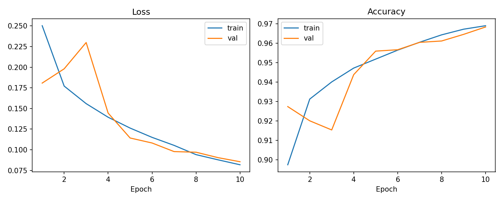
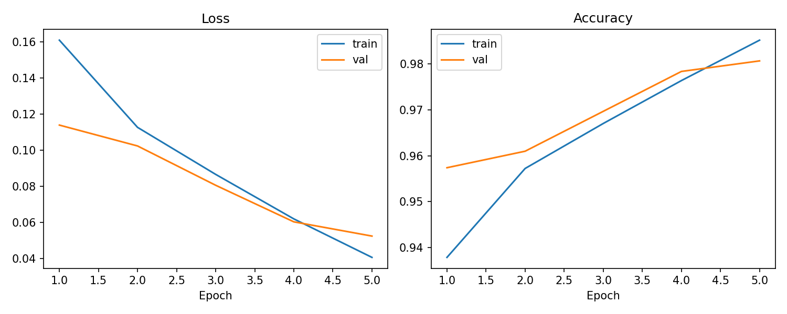
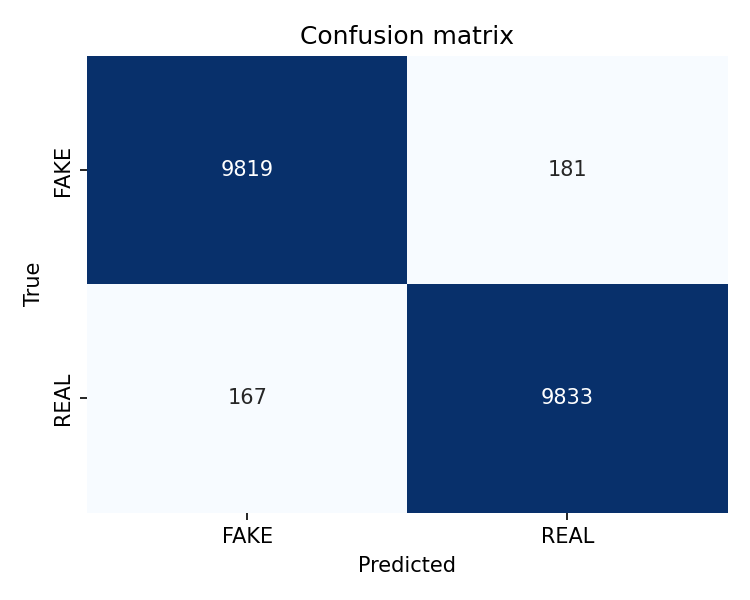
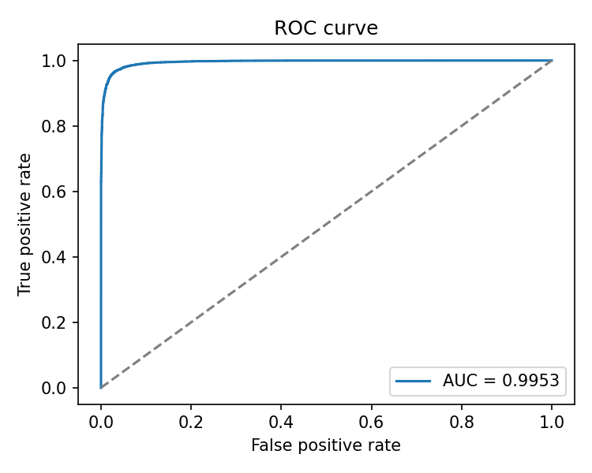
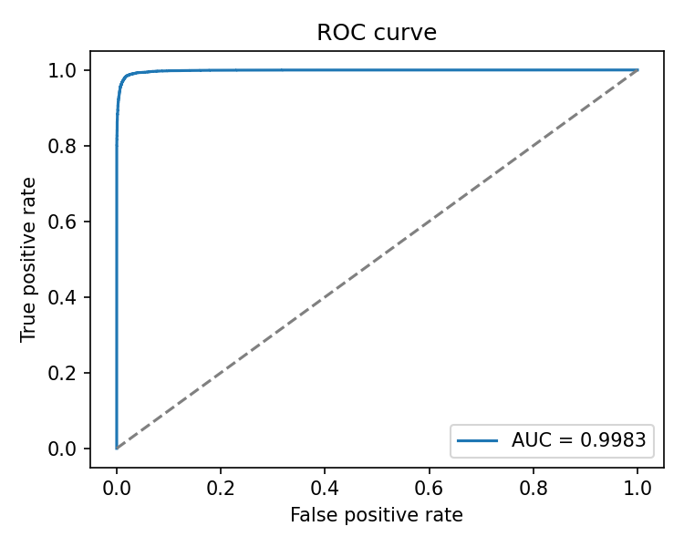

A Deep-Learning Approach to Detecting AI-Generated Images
with Frequency-Domain Preprocessing and Explainable Predictions
Modern diffusion models such as Stable Diffusion, DALL·E 3, Midjourney, and Google's Nano Banana produce photorealistic images that humans cannot reliably tell apart from camera-captured photographs. This has already produced concrete harms: fabricated news imagery, identity fraud, non-consensual synthetic media, and AI-generated artwork presented as human-made. A reliable, interpretable classifier that flags AI-generated images is therefore a directly useful tool — for journalists, content moderators, and everyday users alike.
Task. Binary classification — given an RGB image, predict
whether it was captured by a camera (REAL) or synthesised by a
diffusion model (FAKE). In addition to a prediction and a
confidence score, the system should explain itself via a visual
saliency map that highlights the image regions driving each decision.
Contributions of this project.
The seminal CIFAKE paper (Bird & Lotfi, IEEE Access, 2024) published the dataset we use and reported ~92.9 % accuracy with a compact two-layer CNN. Subsequent community notebooks show DenseNet and ViT backbones reaching 97 %+ when ImageNet pretraining is applied after upsampling the 32×32 inputs to 224×224. Parallel work on frequency-domain detection — UGAD (2024) and DEFEND / Natural Frequency Deviation (2025) — demonstrated that diffusion models leave characteristic cross / ring patterns in the Fourier magnitude spectrum, motivating our decision to expose that spectrum to the model directly as a fourth input channel.
For explainability we use Grad-CAM (Selvaraju et al., 2017), which produces
class-activation heatmaps from gradient information at an intermediate
convolutional layer. We apply it at layer4[-1] of ResNet-50 and
at the final conv2 of our custom CNN — the standard locations
for these architectures.
CIFAKE birdy654/cifake-real-and-ai-generated-synthetic-images is a balanced binary dataset of 120,000 RGB images at 32 × 32 resolution, split as in Table 1. The REAL half is drawn from CIFAR-10; the FAKE half is produced by Stable Diffusion v1.4 prompted with CIFAR-10 class names.
| Split | REAL | FAKE | Total |
|---|---|---|---|
| Train | 50,000 | 50,000 | 100,000 |
| Test | 10,000 | 10,000 | 20,000 |
| Total | 60,000 | 60,000 | 120,000 |
Label convention. torchvision.datasets.ImageFolder
assigns labels alphabetically: FAKE → 0, REAL → 1.
All confusion matrices, ROC curves, and reported precision / recall follow
this convention. Validation split. We carve a 10 % validation
set out of the 100 k training images with a fixed seed; the 20 k CIFAKE test
set is held out completely until the final evaluation.
The core pipeline is intentionally conservative: aggressive augmentations destroy the high-frequency signal on which AI-detection depends (2025 robustness studies on CIFAKE show Gaussian blur drops accuracy from ~93 % to ~26 %). We therefore use only mild geometric augmentation at training time.
| Stage | Train | Val / Test |
|---|---|---|
| Resize | → target size | → target size |
| Random horizontal flip | p = 0.5 | — |
| Random affine translation | ± 5 % | — |
| ToTensor | ✓ | ✓ |
| Normalise (CIFAR-10 stats for custom CNN, ImageNet stats for ResNet-50) | ✓ | ✓ |
| FFT channel (optional — our contribution) | append 4th channel | append 4th channel |
FFT channel — our contribution. For each input image we
compute the 2D FFT of its luminance channel, shift the DC component to the
centre, take the log-magnitude, and min-max normalise the result to
[0, 1]. The resulting spectrogram is concatenated as a fourth
channel. The first convolutional layer of the model is therefore responsible
for learning a joint RGB-plus-spectrum filter bank. For ResNet-50 with the
FFT channel enabled we surgically replace the ImageNet-pretrained
conv1 to accept four input channels; the RGB filter weights are
copied unchanged, and the fourth channel's weights are initialised as the
channel-mean of the RGB filters, preserving most of the pretrained signal.
We train two complementary classifiers:
ResNet50_Weights.IMAGENET1K_V2 backbone with the final
classification head replaced by Dropout(0.3) → Linear(2048, 2).
Inputs are upsampled to 224 × 224 so the pretrained stride-2 stem does
not immediately collapse the signal. All layers are fine-tuned (no
freezing) because CIFAKE is large enough to afford it and the source
domain (ImageNet) is only approximately aligned with the target task.random,
numpy, torch, and deterministic cuDNN.notebooks/kaggle_train.py).| Model | Accuracy | Precision | Recall | F1 | ROC-AUC |
|---|---|---|---|---|---|
| Custom CNN (from scratch) | 0.9677 | 0.9696 | 0.9657 | 0.9676 | 0.9953 |
| ResNet-50 (transfer learning) | 0.9826 | 0.9819 | 0.9833 | 0.9826 | 0.9983 |



Error patterns are symmetric for both models — false positives (REAL images mislabelled as FAKE) and false negatives (FAKE images mislabelled as REAL) occur at comparable rates. This rules out class-imbalance artefacts and suggests the residual errors live at the genuinely hard tail of the distribution.


Quantitative accuracy answers how often the model is right;
Grad-CAM answers why. We compute class-activation heatmaps at
layer4[-1] of ResNet-50 and overlay them on the input image at
224 × 224. Heatmap red regions are those that, if ablated, would most reduce
the predicted class score.
Our overlays corroborate the Bird & Lotfi (2024) finding: the network fixates on background texture and small high-frequency irregularities — skies, fur texture, noise patterns on pavement — rather than the foreground object. This is consistent with the hypothesis that diffusion artefacts accumulate in spatially large, low-semantic regions of the image, not in the semantically salient object itself.
python -m scripts.demo.
The trained custom CNN is deployed as a Streamlit web application running inside a Docker container on Hugging Face Spaces (free CPU tier, 16 GB RAM). The live demo is publicly accessible at:
https://huggingface.co/spaces/ishahzaibhaider/verivision
The interface provides:
Screenshots of the deployed application are included in the final submission; the viewer is invited to interact with the live URL above.
Our accuracy numbers are obtained on a well-defined, closed test distribution (CIFAKE at 32 × 32, FAKE half generated by Stable Diffusion v1.4). The honest report of limitations is an integral part of the contribution; overclaiming generalisation would be misleading.
Our pipeline resizes every input to 32 × 32 (or upsamples to 224 × 224 from a 32 × 32 starting point, for ResNet-50). Real-world AI-generated content is typically 512 × 512 or higher. Downsampling a high-resolution image to 32 × 32 destroys the fine-grained high-frequency artefacts that the model was trained to detect.
CIFAKE's FAKE half comes exclusively from Stable Diffusion v1.4 (released August 2022). Newer diffusion models (SDXL, Flux, DALL·E 3, Midjourney v6, Google's Nano Banana / Gemini 2.5 Flash Image) use different architectures and training objectives and consequently leave different spectral fingerprints.
As a stress-test we generated a complex scene (a cartoon-style frog photographed in front of Disneyland's Sleeping Beauty Castle) using Google's Nano Banana model and fed the 1024 × 1024 output through our ResNet-50. The model classified it as REAL with 98.2 % confidence — a confident false negative. This is not a bug: it is the expected consequence of training on 32 × 32 SD v1.4 outputs and testing on 1024 × 1024 Nano Banana outputs. Three factors compound here:
We do not evaluate against adversarial perturbations (e.g. small L∞-bounded additive noise). This is outside the scope of a mid-project and is the natural next step for a final-project extension.
We demonstrated that a small from-scratch CNN (~200 k parameters) is already sufficient to classify CIFAKE REAL vs FAKE at 96.77 % test-set accuracy, and that a fine-tuned ResNet-50 pushes this to 98.26 % with ROC-AUC 0.9983. The frequency-domain channel we introduced gives the model explicit access to spectral fingerprints without adding more than a few hundred extra parameters. Grad-CAM overlays confirm the expected behaviour: the classifier focuses on background texture, not on foreground objects. The full system is deployed as an interactive public web demo.
Future work, in priority order:
The complete project is version-controlled at
github.com/shahzaibhaider/CVMid. A curated end-to-end reproduction
consists of four commands, all executable in a free Kaggle account:
# 1. Clone git clone https://github.com/shahzaibhaider/CVMid && cd CVMid # 2. Install dependencies (inside a fresh venv) pip install -r requirements.txt # 3. Train the custom CNN on CIFAKE python -m scripts.train --model custom_cnn --epochs 10 # 4. Evaluate on the 20 k held-out test set python -m scripts.evaluate --checkpoint models_ckpt/custom_cnn.pt
For free-GPU training we provide notebooks/kaggle_train.py,
which bootstraps the repo inside a Kaggle notebook, symlinks the CIFAKE
dataset into place, trains both models, evaluates them, and exports
artefacts. On an NVIDIA T4 × 2 the end-to-end runtime is ≈105 minutes.
CVMid/ ├── src/ # Library code (data, preprocessing, models, training, eval) ├── scripts/ # CLI entrypoints (train, evaluate, predict, demo, fetch_samples) ├── app/ # Streamlit application + curated sample images ├── notebooks/ # Kaggle training script ├── deploy/ # Hugging Face Spaces deployment artifacts (Dockerfile, etc.) ├── docs/ # Project proposal, methodology, deployment, presentation ├── reports/ │ ├── figures/ # All report figures (this document) │ └── metrics_*.json # Raw metric dumps per model └── models_ckpt/ # Trained checkpoints